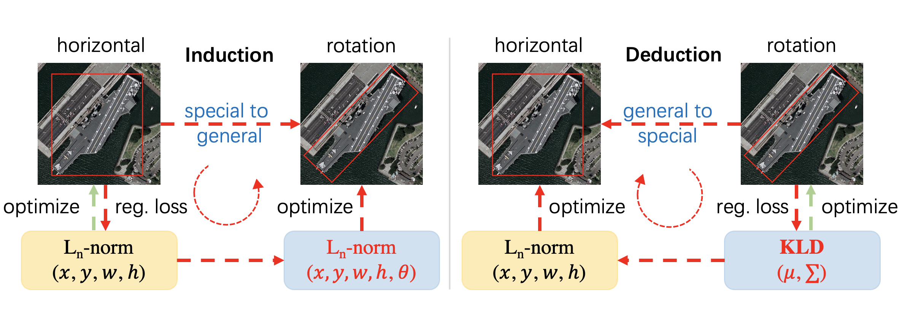
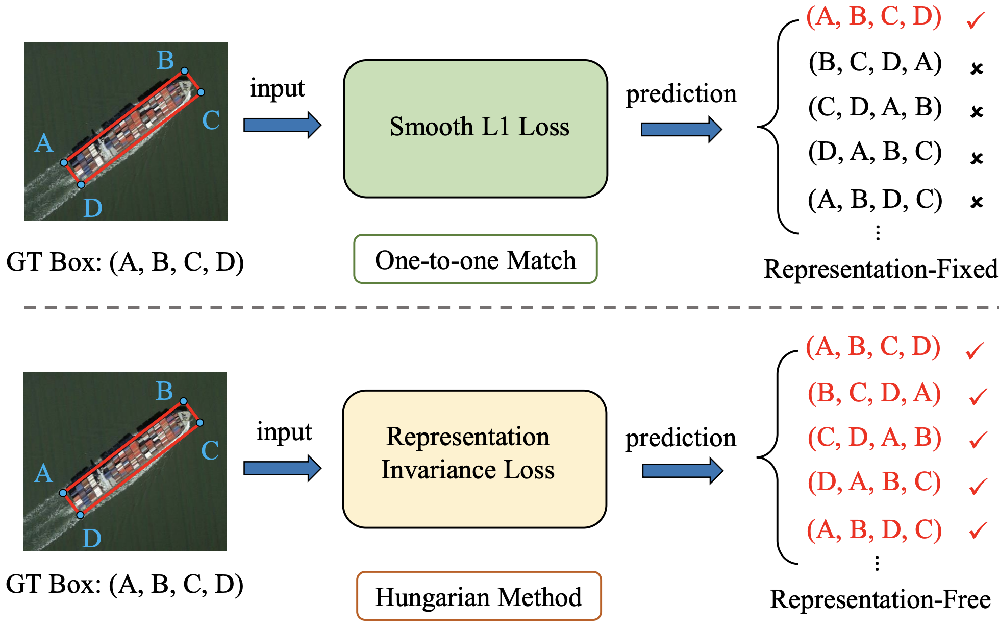
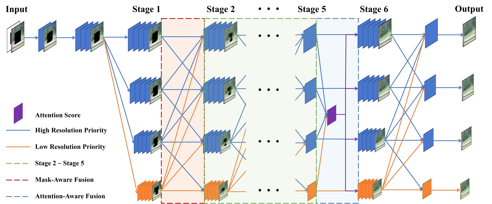
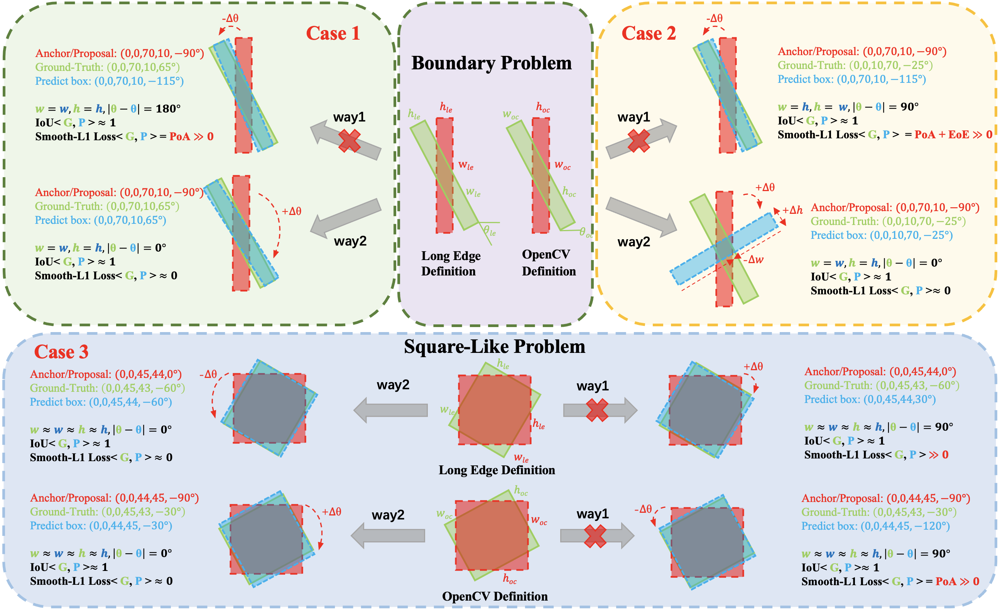
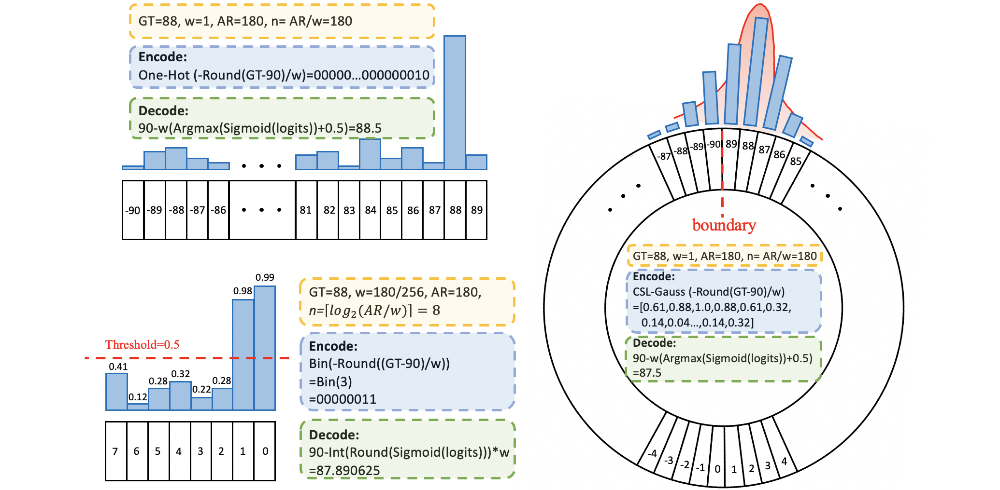
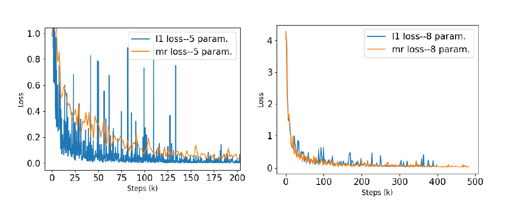
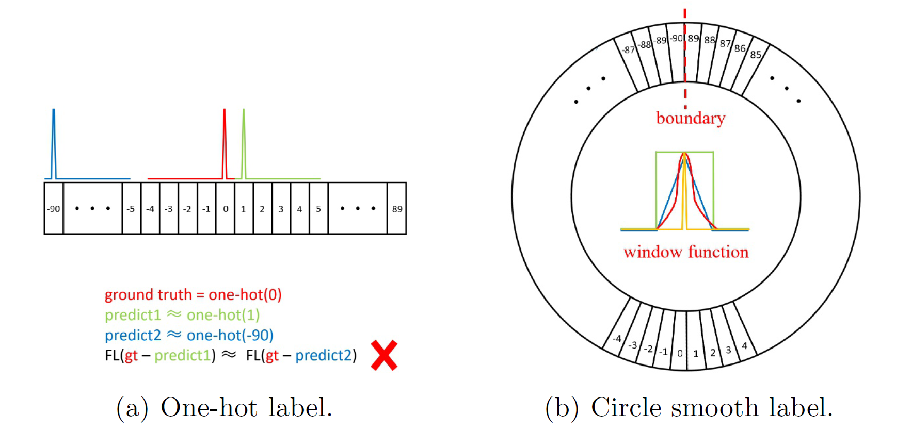
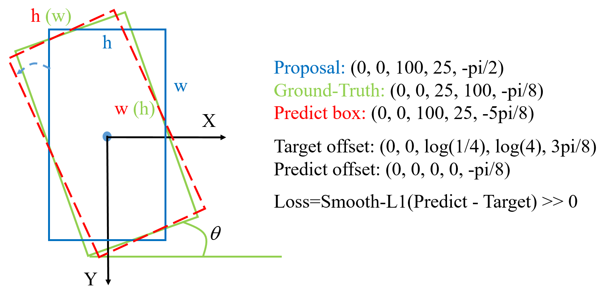
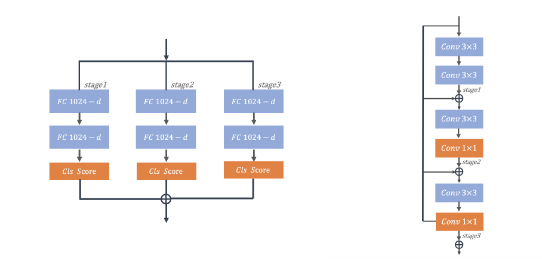
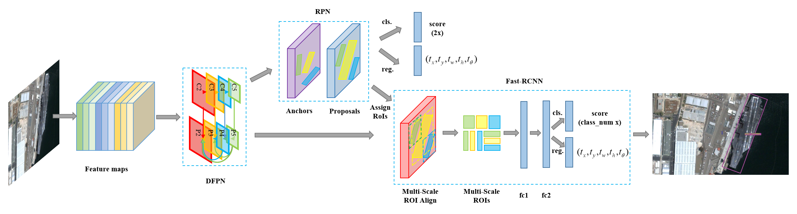

Publications




Optimization for Arbitrary-Oriented Object Detection via Representation Invariance Loss
IEEE Geoscience and Remote Sensing Letters (GRSL, CCF-C), 2021




Dense Label Encoding for Boundary Discontinuity Free Rotation Detection
In Proceedings of the IEEE Computer Vision and Pattern Recognition (CVPR2021, CCF-A), Virtual, 2021


Learning Modulated Loss for Rotated Object Detection
In Proceedings of the Thirty-Five AAAI Conference on Artificial Intelligence (AAAI2021, CCF-A), Vancouver, Canada (Virtual), 2021

R3Det: Refined Single-Stage Detector with Feature Refinement for Rotating Object
In Proceedings of the Thirty-Five AAAI Conference on Artificial Intelligence (AAAI2021, CCF-A), Vancouver, Canada (Virtual), 2021



Arbitrary-Oriented Object Detection with Circular Smooth Label
In Proceedings of the European Conference on Computer Vision (ECCV2020, CCF-B), Glasgow, Scotland, UK (Virtual), 2020


SCRDet: Towards More Robust Detection for Small, Cluttered and Rotated Objects
In Proceedings of the IEEE International Conference on Computer Vision (ICCV2019, CCF-A), Seoul, Korea, 2019



Rethinking Classification and Localization for Cascade R-CNN
In Proceedings of the 30th British Machine Vision Conference (BMVC2019, CCF-C), Cardiff, Wales, UK, 2019

Automatic Ship Detection in Remote Sensing Images from Google Earth of Complex Scenes Based on Multiscale Rotation Dense Feature Pyramid Networks
In Remote Sensing (ESI Highly Cited Papers), 2018